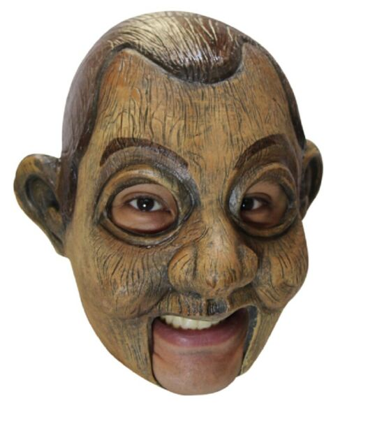
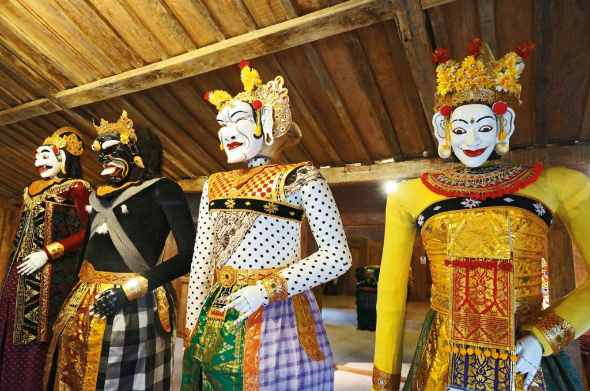
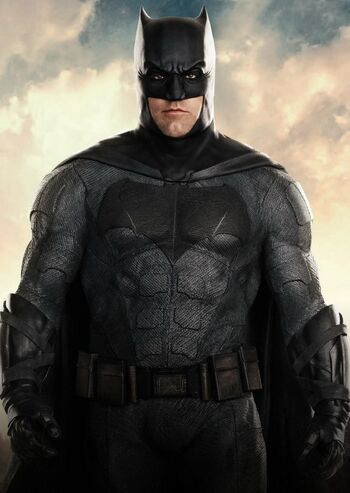
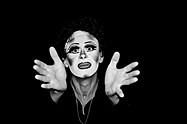
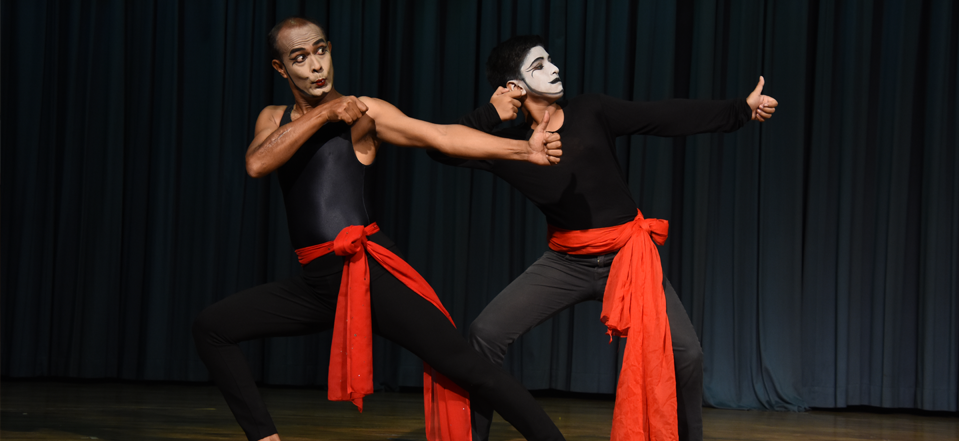

Masks for entertainment are used in theatre, opera and during carnivals and celebrations. Masks have been used almost universally to represent characters in theatrical performances. Masks are also used in tribes to show tribal performance. In India two dance form are very famous for entertainment such as Kathakali Dance and Chhau Dance
Masks used in Puppet Performances
 A puppet is an object, often resembling a human, animal or mythical figure, that is animated or manipulated by a person called a puppeteer. Within Mask Work and Puppetry the individual can be involved in the highly organic creative process of imagining, designing, developing, creating and finally breathing life into their personal physical creation. Mask Work and Puppetry can incorporate all of the aspects of Storymaking, Storytelling, Myths, Fairytales, metaphor, rituals, symbols, dramatisation and voicework.
Masks used in Movies
Batman
Bruce Wayne explains to Officer Blake that the mask was to protect the people closest to and that the idea was to be a symbol Batman could be anybody.
Krissh
In the film, there is a mask, which helps Krishna in protecting his identity. Krrish uses his super powers for the benefit of the needy people in society. The makers believe that this is the USP of the film. The mask was specially designed to give the character a feel of mystery.
The scream

Finally, during a location scout, they found the Ghostface mask inside a box of stuff in a garage. Craven wanted to use it as the basis for their mask because it resembled Edvard Munch's famous “The Scream” painting. ... That's when everyone decided it would be easier to simply get the rights to the original mask.
The mask
Although initially intending to use the Mask's powers to get revenge on his tormentors, Stanley ultimately decided to use them for good. The Mask operates on his own agenda at first, but chooses to become a superhero in the end. Max as Milo, Stanley's Jack Russell Terrier.
Masks can be used as camouflage or to deceive others — even for the good guys. The hero is often portrayed as someone who, out of modesty, or because he has a blemish on his face, reaches for a mask before committing heroic deeds. These days, the masks we wear serve as protection against the environment around us during the COVID-19 outbreak, or against air pollution. The same is true in some films, where masks are worn as a survival tool. In the 1931 Austrian film Comradeship, masks protect people during a mining accident rescue mission.
Masks used in Mime
 
Masks have been used since antiquity for both ceremonial and practical purposes. They are usually worn on the face, although they may also be positioned for effect elsewhere on the wearer's body. Mime uses mask because the show their expression with the help of body language, not by their face.